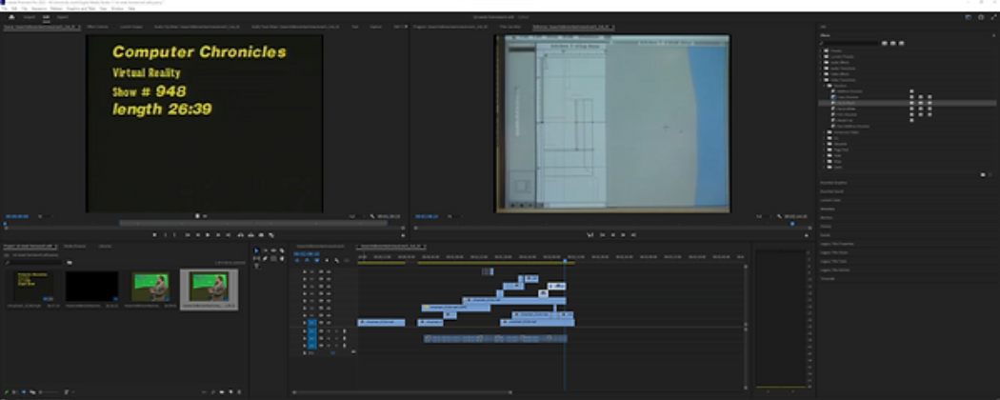

Above is my final cut for the assignment. Throughout the process of editing and re-editing this I believe I have refined the story I am attempting to portray and have made improvements since my original edit to achieve greater context.
Shown below is my process, and test edits, created in the process of making this final video.
An excerpt from a progress entry I had made;
"For this weeks task I have attempted to merge the audio of 1 video with the visuals of another and try to form new context using this found footage. Below I have a screenshot of my work and the completed short clip I have created."
A Screenshot from my first week of progress:
I chose to use the footage of the VR television program and the audio of the space program to juxtapose the technology based universe that is being created. I chose to use the presenter as the ancient alien figure gifting the new universe to the other characters. I also used the hands many times a a vessel for the transferring of information in the video and using the imagery to match up a few match cuts.
Below is my storyboarding process for the video, despite the final cut not matching the planned scenes the process aided in rethinking the flow of the video
 BACK
BACK